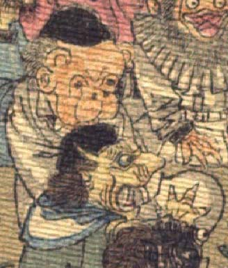

鬼。頭に頭巾状のものをかぶり、頭頂は禿げている。額の両脇に丸い角を2本生やしている。目は落ち窪み、鼻は低く、鼻の穴が上を向いている。口の上が膨らみ、頬がたるんでいる。顔つきはサルを思わせる。白い着物を着て、座っている。
著作者：J.Dautremer／出典：親書誌：U426_nichibunken_0123：Le vieillard et les démons／日付：2006／資源識別子：U426_nichibunken_0123_0003_0006
Copyright (c)2010- International Research Center for Japanese Studies, Kyoto, Japan. All rights reserved.